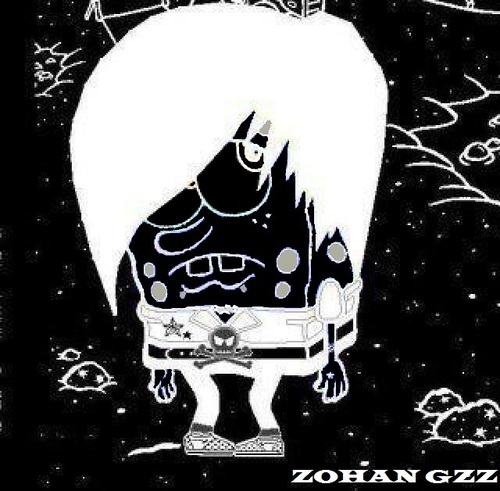
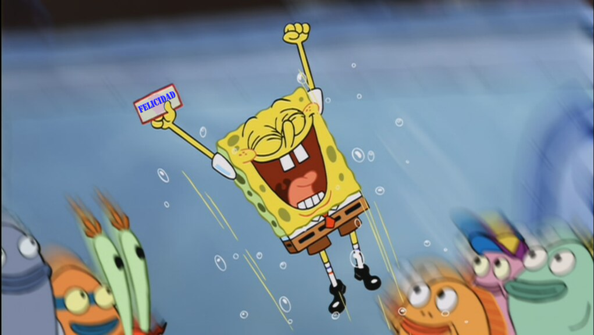

ZOHAN GZZ

ZOHAN GZZPUBLICIDAD, PROGRAMAS Y MAS 2.0
Amor Desgraciado
¿Por qué el amor nunca puede ser completo? ¿por qué la pareja perfecta no existe? ¿por qué me siento tan... desesperanzado?
Johan Gzz (30-MAY-2024)
El dia de ayer tuve la dicha de salir con una chica, la cual conozco desde el año 2022. La conocí gracias a un sitio web llamado Quora. Ella vió uno de mis escritos de ese sitio web, se sintió interesada y decidió buscarme por Facebook y me encontró facilmente (yo uso el mismo nombre en todos los sitios que uso)...
Especificamente el escrito por el cual me conoció, era uno en el cual me quejaba de una infidelidad que viví hace unos años por otra chica en el año 2020.
Recuerdo la primera vez que me contactó. Yo me sentía mal. En ese entonces yo ya habia superado a la exnovia del 2020, pero aún me sentía bastante solitario.
Estaba triste reparando una bocina subwoofer para utilizarla en casa, cuando de repente me llegó su mensaje y de pronto la conversación fluyó excelentemente bien.
Hablamos por un buen rato y me sorprendió la compatibilidad que teníamos en muchos temas de los que hablamos, y por sorpresa me invitó a salir! ... En ese entonces entré a su perfil y si me gustó mucho. De hecho tiene el rostro y la complexión que siempre busqué en una chica.
Fué increíble ese dia. De estar triste reparando una bocina después de regresar de la universidad, triste y desolado, en menos de una hora estaba feliz por conocer a una persona nueva de rasgos bonitos con la que conversé muy bien.
Fué el cambio de ánimo positivo más rápido que he vivido.
Salimos muchas veces durante el 2022, y debo decir que me la pasé bastante bastante bien.
Hablamos de muchas, muchisimas cosas, es una persona de mente muy abierta. Nunca habia conocido a una chica de mente abierta y que al mismo tiempo sea amorosa y tierna.

Incluso se interesó en los videos que hacía para internet, y eso que son solamente videos de juegos y vlogs bastante básicos!!!
Dios, quien hace eso??
Cualquier otra mujer habría bostezado al ver mi contenido de internet, pero ella le prestó un genuino interés!
Salimos varias veces, nos abrazamos varias veces, y tambien lo hicimos varias veces. <3
Todo iba muy bien... Hasta finales de 2022... En ese momento sentí que algo cambió en la alineación planetaria del cosmos y me estanqué.
No solamente paralisis con ella, sino con todo.

En Diciembre de 2022 (o enero 2023) me encontraba en mi casa y de pronto me manda un mensaje diciendo que termina conmigo porque no se sentía segura de seguir con la relación (...algo asi me dijo).
Si mal no recuerdo, ella estaba preocupada por no poder vernos casi nunca, debido a que debía cuidar a su hijo, que en ese entonces tenía 3 años... (si, ella es madre soltera).
Eso me deprimió fuertemente. Y lo peor es que justo después de eso, comenzó una paralisis en casi todos los aspectos de mi vida.
Me salí de la universidad debido a un problema con las calificaciones en linea que aparentemente no se reflejaban y por culpa de eso reprobé todo.
Comencé a tener problemas espirituales. Ruidos en la casa, sensación de salirme de mi cuerpo, desesperación constante, y unos deseos de suicidio que explicaré en otra ocasión.
Todo se paralizó. Como si hubiese entrado a un 2020 2.0 ya que tambien en 2020 se detuvo casi todo en mi vida.
Y así transcurrí... TOOODO el 2023 y 4 meses del 2024. Lentamente.
HASTA AHORA. Ayer 29 de mayo, y hoy 30 de mayo 2024...
Desde unos meses atrás, me volvió a contactar para volver a salir, pero por falta de tiempo, de dinero, de libertad y de energía fisica, no pude salir con ella, hasta el día de ayer.
Y es aquí, donde me pegó muy fuerte la sensación, a tal grado de hacer este escrito para la web. Despues de tenerla abandonada mucho tiempo.
Unos dias antes de salir con ella, sentí una sensación muy horrible cerca de la zona del corazón y el estómago. Se sentía feo, como si me fuese a m0rir. Me pasó varias noches seguidas, y ella, amorosamente accedió a mis llamadas que le hacia en la noche casi madrugada para tranquilizarme. Es algo que le agradezco mucho la verdad.
Despues, se corta la conexión a intenet en mi casa debido a una falla en el cableado de la ciudad, lo cual causa que tenga que cargar mi celular con saldo movil.
Y bueno... Pasa 1 semana y
Ayer salí con ella. Despues de casi 2 años de no verla, y... Algo sucedió ese dia. Casi todo transcurrió muy bien, y estoy completamente agradecido por eso.
Desde la mañana temprano, me despierto y enciendo la TV de mi habitación. Cosa que no hacía desde el 2022 sospechosamente. Y me entero que TIENE UNA EXCELENTE RECEPCIÓN DE SEÑAL...
COSA QUE NUNCA EN LA VIDA...
NI SIQUIERA CON UNA BUENA ANTENA!...
Y EL DIA DE AYER SOLAMENTE TRAÍA UN PEDAZO DE CABLE CORTADO DE 30cm COMO ANTENA!...
Y SE VEÍA PERFECTO!
Despues encontré la ropa perfecta para salir, y por alguna razón sentí que me quedó perfecta. bastante cómoda y a la medida... (Y eso que yo casi nunca me mido la ropa al comprarla. Sobretodo porque casi siempre es ropa regalada).
El celular estaba cargado, encontré dinero suficiente para salir y pagar el pasaje, tenía internet en mi celular gracias al saldo. (Gracias a que no habia internet en mi casa)... Una desventaja terminó siendo una ventaja.

Al salir de casa, el día estaba PERFECTAMENTE AGRADABLE. Completamente despejado y con un cielo azul y un sol claro que no quemaba.
El transporte urbano pasó rápido y alcancé asiento sin problemas.
Llegué temprano al lugar de la cita y bueno, no todo fué perfecto claro, ella se retrasó tiempo considerable en llegar, pero afortunadamente llegó.
El sitio de la cita, nuevamente no lo habia visitado desde 2022... Y de hecho, mientras esperaba su llegada en ese lugar, al estar sentado en uno de los asientos del establecimiento, me sentí comodo. Como si por un momento hubiese regresado al año 2022. Fue super extraño.
Unos minutos después, le llamo para saber donde se encuentra, y antes de que me respondiera, vi en un televisor del establecimiento que estaban pasando un episodio de BOB ESPONJA en el CANAL 5!!!.
(para los que no saben, Bob Esponja, ha sido una caricatura que me ha acompañado durante prácticamente toda mi vida. Casi siempre me levanta el ánimo de una forma u otra. Incluso el logotipo de esta web, está basado en el personaje principal de la serie).
Justo despues de ver que estaba Bob Esponja en la TV y alegrarme, me responde y me dice que llegó al establecimiento.
Al verla otra vez... Me enamoré de nuevo.
Tan linda como en 2022.
Con ese carisma y esa belleza tan dificil de encontrar.
Nos vimos, nos saludamos, platicamos, hicimos lo que teniamos que hacer, y mientras todo eso sucedía, se sentía en mi, un aura de libertad, de sentirme suelto, libre, despejado de todas las ataduras que me han estado atormentando desde 2023.
Especificamente la escena que ví de Bob Esponja en la TV, era esa en la que está mirando a la pantalla y guiñando un ojo.
Es como si Bob Esponja me hubiese dicho
Éste es tu día. Disfrútalo.
Todo transcurrió según lo planeado, casi practicamente ningún problema salvo unos cuantos retrasos.
Habrá sido un solo dia, pero fue el mejor dia que he tenido desde el 2023. DIOS, que estoy haciendo con mi vida...
Estoy totalmente agradecido con ella. Aunque solo haya sido un dia. Lo agradezco. A Dios y a ella.
Ha sido una bocanada de aire fresco entre tanta incertidumbre mental.
Una vela entre tantos problemas espirituales.
Un balsamo entre tantos problemas mentales.
Una fluoxetina entre tanta depresión.
Aproveché el dia y la suerte para expresarle todo lo que siento, y al mismo tiempo agradecerle por todas esas llamadas que accedió contestar durante tantos dias.
Gracias a Dios, tuve la oportunidad, la facilidad y la verbalidad necesaria para expresarle todo de la mejor manera posible.
Hasta que se acabó el dia.
Un dia que no queria que finalizara.
Me sentí tan desgarrado como Patricio cuando está cuidando a Gusanito junto con Bob Esponja.
Y lo dice textualmente:"No quiero que este dia se acabe."
Esperando un mañana incierto...
Al finalizar el grán dia, solo vi como se alejaba de mi en ese Uber color plateado...
Y yo, desesperanzado me fuí de regreso a mi casa. A volver a hacer lo mismo una y otra vez todos los dias de mi vida. Atado a responsabilidades del hogar. Lavar platos todos los dias durante 10 años. Ir a la tienda cada tarde desde hace 10 años tambien. No tener tiempo para buscar trabajo por tener que cuidar a mi hermana en las mañanas.
Volví a mi casa con un fuerte deseo de no entrar. Preferir morir ahi en el trayecto que volver a tener que hacer lo mismo de siempre otra vez hasta cuando... Hasta no se...
Tal vez le dolería a mi familia, pero realmente prefería eso en vez de tener que volver a las tareas del hogar.
No quiero seguir vivo haciendo lo mismo una y otra vez.
Me siento prisionero en mi propio hogar.
Volví a casa... Y dormí...
Y al despertar al día siguiente, triste fue mi sorpresa de no encontrar un mensaje de esa chica. (Aunque si haya estado conectada en la red)...
Sólo respondió los mensajes acerca de como regresé a casa, pero a los mensajes amorosos no les prestó atención.
Como si hubiese cambiado...
Posteriormente encendí la TV, y no se veía nada.
Tuve que colocar un cable mucho mas largo y la recepción aún asi fue bastante deficiente.
Y en realidad... Confieso que solo encendí la televisión esperando que lo que viví haya sido un sueño para vivirlo otra vez en la realidad... Pero no.
Podría incluso haber pagado otro pasaje para ir al lugar de la cita otra vez, pero no llegaría nadie nunca.
Eso solo habría sido un auto engaño para la mente.
El dia... Ya no era tan perfecto como el anterior.
Aunque realmente si lo pensé. Por un momento si tuve ganas de ir otra vez al lugar de la cita, y quedarme ahi hasta morir... de hambre o lo que sea.
Qué lástima, y cuanta verdad dijo Bob Esponja.
"Días como ese ocurren una o quizás dos veces en toda la vida."
"Ya llegará otra"... Me molesta que lo digan como si fuese tan sencillo. No es facil, Nunca es facil!
Sobretodo cuando la pareja en cuestion tiene cualidades tan únicas y tan dificiles de encontrar.
"Ya llegará otra chica más recta que si siga las reglas de una relación..."
no me gusta que me digan eso.
Si he conocido mujeres de caracter más rigido, que si serían capaces de formalizar una relación al pié de la letra... pero...
Esas mujeres NO me gustan.
Algo tienen, que no se que es, que no me termina de cuadrar del todo...
Y es que el problema, es que son mujeres tan rigidas, a tal grado de que tanta rigidez les quita amor...
¿si me explico?
Son mujeres que... De tanto seguir las reglas y hábitos establecidos de una relación formal, terminan perdiendo esa ternura y amor......
Fieles, pero no tanto por amor, sino por... costumbre o no lo sé...
No sé como explicarlo mejor.
Quisiera tener las palabras adecuadas para describir lo que trato de expresarles, pero no me salen las palabras...
Son fieles.... Pero a qué costo...?
Dios, Jesus, Urano, Elohim, Júpiter, Venus ...... Necesito ayuda.
¿Por qué todo lo que me gusta dura tan poco tiempo? ¿Por qué lo que quiero me dura muy poco y luego me es arrebatado sin piedad?
¿Por qué el amor tiene que ser asi de dificil?
¿Por qué el amor nunca puede estar completo?
¿Por qué la vida me arrebata lo que más quiero, justo cuando más lo amo?
Me siento tan desgraciado...
Y es que SIEMPRE ES LO MISMO.
¿Por qué tengo que estár viviendo lo mismo cada dia?
Una eterna rutina...
Es como si mi vida estuviese estancada.
Cada vez que hay algo nuevo e interesante, algo sucede y termino volviendo al mismo lugar de siempre...
¿Por qué es tan dificil?
Por lo menos quisiera entender qué está pasando...
...
...
Vaya, no tenía a quién expresarle todo esto...
Pensaba platicarlo con la familia, pero mi familia se va mucho por las emociones y no por el entendimiento... sólo me dirían "dejala y ya" sin hacer un esfuerzo por entender el punto que estoy tratando de explicar...
Pensé decirselo a un amigo, pero realmente tienen cosas más importantes que hacer y francamente no son psicólogos como para estar atendiendo mi problema durante un largo rato...
Pero afortunadamente recordé que tengo ésta hermosa página web, la cual lamentablemente he dejado abandonada por mucho tiempo, pero si todo sale bien, haré lo posible por actualizarla más a menudo.
Gracias por leer.